EBT II · Empresas de Base Tecnológica
Guía completa para los parciales y el final de FIUBA: teoría, tablas, diagramas y el machete de fórmulas. ¿Poco tiempo? Abrí el repaso final: el mínimo indispensable para aprobar.
Comercio Impuestos Contratos Derecho / PI Datos personales Economía Negocio Start-ups
Cómo se rinde EBT II
EBT II mezcla derecho aplicado a la tecnología, impuestos, economía y gestión / evaluación de negocios. No se codea: se trata de definir con precisión, comparar, clasificar y justificar. El material se organiza en dos bloques, uno por parcial.
- Comercio internacional (Incoterms, aduana, balanza de pagos)
- Empresa (sociedad vs empresa, modelo y plan de negocio)
- Impuestos y tributos (IVA, IIBB, BBPP, Sellos, IDCB, IIGG)
- Contratos (tipos y cláusulas)
- Derecho comercial y propiedad intelectual
- Datos personales (ley, habeas data, consentimiento)
- RSE y sostenibilidad
- Economía (macro, micro, mercados)
- Evaluación de negocio (Porter, Canvas, costeo, VAN, punto de equilibrio)
- Planificación y administración (FODA, presupuesto, estado de resultados)
- Start-ups e innovación (Lean Startup, MVP, financiamiento)
Cómo estudiar: primero fijá las definiciones exactas (la cátedra puntúa las palabras precisas), después las clasificaciones (cada impuesto: jurisdicción / directo-indirecto / trasladable / progresivo-regresivo; cada instrumento de PI: qué protege y su vigencia) y por último las fórmulas (balanza de pagos, punto de equilibrio, VAN, salario real). Todo eso condensado está en el repaso final.
Fuente: todo el contenido de esta guía proviene de los apuntes de la materia en Notion. Donde el original tenía un diagrama de las diapositivas, se reprodujo con un esquema equivalente o se dejó indicado.
Comercio internacional
Beneficios del comercio internacional
- Acceso a mercados más amplios: expansión de oportunidades.
- Especialización y eficiencia: ventajas comparativas y economías de escala.
- Diversificación de ByS: más variedad para los consumidores.
- Inversión y desarrollo económico: inversión extranjera directa y desarrollo regional.
- Transferencia de tecnología y conocimiento: innovación y mejora.
- Reducción de costos y precios: por la competencia internacional.
- Estabilidad y cooperación internacional: relaciones diplomáticas e interdependencia económica.
- Adaptación y resiliencia: diversificación de proveedores y mercados.
Importación y exportación
- Importación: introducción de mercadería en territorio aduanero.
- Exportación: extracción de mercadería del territorio aduanero.
- Cuotas de importación: su objetivo es proteger a las industrias nacionales de la competencia extranjera excesiva, regular el mercado y equilibrar la oferta y la demanda.
Actores
Aduana
Organismo administrativo encargado de aplicar las leyes de impo/expo de ByS: control del tráfico de mercaderías, fiscalización de prohibiciones, tributación y habilitación de lugares y horarios.
Delitos aduaneros (con ejemplos):
| Delito | Qué es | Ejemplo |
|---|---|---|
| Contrabando | Entrar o sacar productos del país sin declarar. | Meter celulares desde Paraguay sin pasar por Aduana. |
| Fraude aduanero | Falsificar papeles o mentir en la declaración para pagar menos. | Declarar una notebook en USD 200 cuando vale USD 1.000. |
| Evasión de impuestos y aranceles | No pagar lo que corresponde al importar/exportar. | Traer ropa del exterior y no abonar el impuesto de importación. |
| Impo/expo ilegal | Comerciar bienes prohibidos por ley. | Exportar armas sin autorización. |
| Documentos falsos | Usar papeles adulterados para engañar a la Aduana. | Presentar una factura falsa de origen de mercadería. |
| Violación de regulaciones | Ingresar/sacar productos regulados sin cumplir requisitos. | Importar químicos tóxicos sin permisos ambientales. |
| Manipuleo de contenedores | Alterar cargas para esconder productos ilegales. | Esconder droga dentro de un contenedor de frutas. |
Consecuencias: sanciones penales, sanciones administrativas, confiscación de bienes y daño de reputación.
Despachante de aduana
Profesional especializado en la gestión de trámites aduaneros de impo/expo. Busca facilitar y asegurar que los procesos cumplan con las leyes vigentes: gestión de documentación, cumplimiento de regulaciones, intermediación, asesoría y gestión de trámites.
Freight forwarder
Facilitador del movimiento de bienes desde el origen hasta el destino final. Coordina todos los aspectos del transporte y la logística: coordinación de modos de transporte y transportistas, documentos de envío y declaraciones aduaneras, consolidación de la carga, coordinación logística y gestión de riesgos.
Broker vs Trader
- Intermediario de venta.
- Cobra por comisión.
- Une comprador y vendedor.
- Gestiona la compra de productos en un país y su venta en otro.
- Asume más riesgo que el broker, pero las ganancias por venta son mayores.
Organismos reguladores
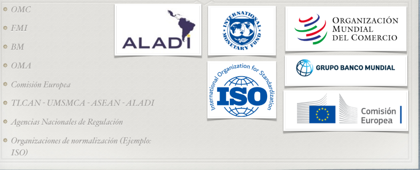
INCOTERMS
Son los distintos tipos de acuerdo de venta reconocidos a nivel internacional. Los colores representan hasta dónde llega la limitación de responsabilidad del comprador y del vendedor a lo largo del transporte.

Para el final: el punto clave de los Incoterms es dónde se transfiere la responsabilidad (y el costo/riesgo) del vendedor al comprador en la cadena de transporte.
Ventajas
Ventaja competitiva
Capacidad de una empresa para superar a sus competidores y obtener un rendimiento superior en el mercado.
- Economías de escala.
- Eficiencias operativas.
- Reducción de costos de producción.
- Optimización de la cadena de suministro.
- Características únicas del producto.
- Calidad superior.
- Innovación.
- Servicio al cliente excepcional.
- Branding efectivo.
Ventaja comparativa
Capacidad de un país para producir ByS a un costo de oportunidad relativamente menor en comparación con otro país.
Implicaciones: especialización, aprovechamiento de los beneficios del comercio y eficiencia global.
Balanza de pagos
Registro contable de todas las transacciones económicas entre un país y el resto del mundo en un período de tiempo.
- Cuenta corriente: mide intercambios de bienes, servicios, rentas y transferencias. CCo = Balanza comercial + Balanza de servicios + Rentas + Transferencias.
- Cuenta de capital: transferencias de capital y compra-venta de activos no financieros (terrenos, patentes). CCap = Ingresos − Pagos.
- Cuenta financiera: movimientos de inversión (directa, cartera, préstamos, reservas). CF = Ingresos − Pagos.
- Errores u omisiones: ajuste de cierre para que la balanza cuadre.
Indicadores:
- Saldo comercial = Exportaciones − Importaciones de bienes.
- Saldo de bienes y servicios = Balanza comercial + Balanza de servicios.
- Saldo de cuenta corriente = resultado neto de bienes, servicios, rentas y transferencias.
Empresa
⚠️ Ojo: la empresa no está taxativamente definida ni en el Código de Vélez, ni en el nuevo Código Civil y Comercial, ni en la Ley General de Sociedades.
Sociedades vs Empresas
| Aspecto | Empresa | Sociedad |
|---|---|---|
| Naturaleza | Actividad económica u organización productiva. | Forma jurídica de asociación entre personas. |
| Reconocimiento legal | No tiene definición jurídica propia; aparece a través del empresario (físico o jurídico). | Regulada en la Ley de Sociedades; es persona jurídica. |
| Sujeto de derecho | El empresario (dueño). | La sociedad misma (tiene patrimonio, razón social). |
| Responsabilidad | Puede ser ilimitada si es empresario individual. | Según el tipo societario: limitada (S.A., S.R.L.) o ilimitada (sociedad colectiva). |
Elementos de la empresa
- Bienes inmuebles
- Bienes muebles
- Maquinaria
- Rodados
- Mercadería
- Nómina de personal
- Valor llave
- Valor clientela
- Propiedad industrial o comercial
- Propiedad intelectual
Modelo de negocio vs Plan de negocio
Representación estructural de cómo una organización crea, entrega y captura valor. Describe la lógica de cómo opera la empresa y cómo interactúa con clientes, proveedores y competidores.
Documento detallado con los objetivos, estrategias, estructura organizacional, mercado, proyecciones financieras y necesidades de financiamiento. Es la herramienta de planificación, esencial para buscar financiamiento (inversores o préstamos).
En el final: distinguir empresa (actividad económica, sin definición jurídica propia) de sociedad (persona jurídica regulada), y modelo de negocio (el qué/cómo conceptual) de plan de negocio (el cuándo/dónde detallado y financiero). El desarrollo completo del negocio está en §9.
Impuestos y tributos
Tributos
Prestaciones pecuniarias del contribuyente, originadas por un hecho imponible, cobradas por el Estado en función de su poder tributario.
- No vinculados (sin contraprestación directa): impuestos (ej. IVA).
- Vinculados (asociados a un servicio o beneficio del Estado): tasas (ej. ABL) y contribuciones especiales (ej. obras).
Capacidad contributiva
Principio tributario: cada persona o entidad debe pagar impuestos en función de la manifestación de su capacidad económica real o potencial.
- Manifestación real: ingresos (ej. IIGG) y patrimonio (ej. Bienes Personales).
- Manifestación potencial: consumo (ej. IVA) y desarrollo de actividades económicas (ej. Sellos).
Hecho imponible
Otras clasificaciones
- Trasladable: el contribuyente traslada el costo a otro, generalmente al consumidor final.
- No trasladable: recae directamente sobre el contribuyente.
- Directo: según manifestación real.
- Indirecto: según manifestación potencial.
- Fijos: el monto no varía si no cambia la situación patrimonial (ej. Monotributo).
- Progresivos: el % crece con la manifestación explícita de capacidad contributiva.
- Regresivos: el % es fijo y no tiene relación directa con la capacidad contributiva.
Los impuestos, uno por uno
| Impuesto | Hecho / base imponible | Jurisdicción | D/I | Trasl. | Alícuota | Progr. |
|---|---|---|---|---|---|---|
| IVA | Compra/venta (al entregar el bien o emitir factura). | Nacional | Indirecto | Sí | 21% gral · 10,5% alimentos · 27% serv. públicos · 0% exentos | Regresivo |
| IIBB | Realizar una actividad económica; base = facturación total sin restar costos. | Provincial | Directo | No | 1%–5% | Regresivo |
| BBPP (Bienes Personales) | Situación patrimonial al 31/12; base = valor de todos los bienes. | Nacional | Directo | No | 0,25%–1,75% | Progresivo |
| Sellos | Formalización de documentos con actos jurídicos; base = valor del contrato/operación. | Provincial | Directo | No | 0,5%–3% | Regresivo |
| IDCB (Débitos y créditos) | Movimiento de dinero en cuenta bancaria (débito/crédito). | Nacional | Directo | No | 0,6% por cada crédito/débito | Regresivo |
| IIGG (Ganancias) | Ganancias netas del año fiscal. | Nacional | Directo | No | Personas físicas 5%–35% (sobre mínimo); tasa fija 35% | Progresivo |
Condiciones frente al IVA
| Condición | Obligaciones ante AFIP | Facturación | IVA crédito/débito | Ejemplo |
|---|---|---|---|---|
| Responsable Inscripto (RI) | Factura discriminando IVA; declaraciones mensuales. | Factura A (a RI) / Factura B (a CF, monotributistas, exentos). | Descuenta IVA crédito (compras) del IVA débito (ventas). | Empresa mayorista. |
| Monotributista | Cuota fija mensual que incluye IVA, Ganancias y aportes. | Solo Factura C. | No descuenta IVA; compra con IVA incluido. | Kiosco de barrio. |
| IVA Exento | No paga IVA al fisco. | Factura C (sin IVA discriminado). | No descuenta IVA crédito fiscal. | Colegio privado / hospital público. |
| Consumidor Final | Sin obligaciones de facturación. | Recibe Factura B o C. | Paga el IVA incluido en el precio; no descuenta. | Persona que compra en el súper. |
Agentes e ingreso al fisco
- Agente de retención: frente al pago de una obligación, retiene una parte del pago a su acreedor e ingresa ese monto al fisco.
- Agente de percepción: frente al cobro de un derecho, cobra un adicional por sobre el precio a su deudor e ingresa el monto al fisco.
- Ingreso al fisco: se realiza mediante el pago de SICORE (quincenal).
En el final: para cada impuesto tené fresca la cuádrupla jurisdicción / directo-indirecto / trasladable / progresivo-regresivo y su hecho imponible. Distinguí retención (sobre el pago) de percepción (sobre el cobro), y RI vs monotributo (quién puede descontar IVA crédito).
Contratos
- El contrato funciona como ley para las partes: es un reglamento por el cual rige el comportamiento de los involucrados.
- La libertad de la voluntad (lo que se acuerda) queda limitada por las leyes vigentes y el orden público (ej.: no se puede pactar una paga por debajo del SMVM).
- El consentimiento se manifiesta por expresión de la voluntad, explícita (firma) o tácita (ej.: aceptación por mail). También por la Teoría de los Actos Propios: si uno actúa como si hubiese aceptado, el contrato se toma como válido.
Tipos de contrato más comunes
- Prestación de servicios: regido por obligación de resultados o de medios; plazo determinado (renovable), a veces atado a un proyecto. Requiere determinar claramente objeto, horas/entregables/objetivos y medición de resultados. Evade la ley de contrato de trabajo (una relación de dependencia encubierta); es el modo de contratación de empresas internacionales más común; si se pacta en moneda local, se acuerdan períodos de revisión.
- Confidencialidad (NDA): evita la filtración de información privada entre cliente final y quien implementa. Hay responsabilización solidaria: si comparto la info con un colega/subordinado, este también debe firmar el NDA con el cliente, o su filtración me cae a mí. Puede ser general o por información específica.
- Contrato de distribución: designa distribuidores para vender software de software factories; permite comercializar licencias como si fueran la propia factory. Puede ser con exclusividad (por materia o territorio) o no exclusivo. Importa la determinación de precios y beneficios; se agregan condiciones de auditoría, compliance y obligaciones de resultados; la factory se compromete a soporte y capacitaciones.
- Contrato de agencia: los agentes son intermediarios entre la factory y los clientes. No hay vínculo laboral ni regla de distribuidor. El agente hace gestiones comerciales y cobra por venta (un % o un fee); la factory brinda los medios normales para promoción y comercialización.
- EULA (licencia de usuario final): contrato directo entre cliente final y software factory. Debe incluir Site ID (identifica empresa/cliente) y N.º de serie (identifica la copia del software); sin ellos, carece de validez. Incluye políticas de buen uso y cuestiones prohibidas; con la descarga del software se entiende aceptado.
Cláusulas particulares
| Cláusula | Para qué sirve |
|---|---|
| Cesión de derechos | Permite reasignar los derechos del contrato. Para cuidarse: agregar que se requiera aceptación de la cesión. |
| Jurisdicción | En lo posible, negociar que sea en Tribunales de CABA. |
| Limitación de responsabilidad | Especifica hasta dónde llega la responsabilidad de cada parte. |
| Cierre | Da por entendido que el contrato es la versión final; invalida los términos de conversaciones previas no incluidos. |
| No renuncia | Ante el incumplimiento de una cláusula (o si una resulta leonina), no se invalida el resto del contrato. |
| Excesos | Determina en detalle qué pasa ante atrasos de entrega, necesidad de horas extra, etc. |
Recomendación de la cátedra: TODO POR ESCRITO. En el final suelen pedir distinguir los tipos de contrato del mundo del software (servicios, distribución, agencia, EULA) y para qué sirve cada cláusula particular.
Derecho comercial y propiedad intelectual
Marco jurídico: Constitución Nacional (Art. 17) · Ley 22.362 de Marcas y Designaciones · Modelos y Diseños Industriales (y Ley 27.444) · Ley 11.867 de Fondo de Comercio · Ley 11.723 de Derechos de Autor.
La PI tiene dos grandes ramas: propiedad industrial (marca, patente de invención, nombre comercial, diseño industrial, modelo de utilidad, know-how) y derechos de autor (obras, software, contenidos).
Propiedad industrial
Marca
Palabras, emblemas, imágenes, etc., que identifican y diferencian productos y servicios. Autoridad de aplicación: INPI (Instituto Nacional de la Propiedad Industrial).
- Registro (da): monopolio y exclusividad de uso, protección de imagen, usufructo exclusivo, derecho de oposición ante uso desleal, y capacidad de ceder el uso a título oneroso o gratuito.
- Vigencia: 10 años desde el registro, renovable por otros 10 (indefinidamente). Para renovar se debe acreditar uso efectivo en los últimos 5 años. La transferencia es lícita; la cesión/venta del fondo de comercio implica la cesión de la marca salvo que se especifique lo contrario. Se extingue por renuncia, vencimiento o nulidad.
- Ley de Marcas 22.362 — requisitos: novedad relativa, distintividad y licitud. Prohibidos: nombres genéricos, descriptivos o contrarios a la moral.
- Procedimiento: presentación ante INPI → examen formal y sustancial → oposición de terceros → registro y vigencia (10 años renovables).
- No son marcas: designaciones necesarias/habituales, signos de uso general previo, la forma de los productos, su color natural.
- Ventaja estratégica: sin marca registrada, el nombre puede ser usado por terceros, aunque uno haya sido «el primero en usarlo».
Otros instrumentos
| Instrumento | Qué protege / define | Requisitos / vigencia |
|---|---|---|
| Patente de invención | Objeto, procedimiento, herramienta, compuesto químico o microorganismo. | Novedad + actividad inventiva + aplicación industrial. |
| Nombre comercial | Identifica a la persona jurídica o humana. No es lo mismo que la marca (Molinos ≠ Lucchetti). | No hay obligación de registrarlo (aunque recomendado). |
| Diseño industrial | La apariencia de un producto (líneas, contornos, colores, forma, textura, ornamentación). | Registro por 5 años, renovable por 2 períodos. |
| Modelo de utilidad | Mejora introducida en herramientas/objetos conocidos que implique una mejor utilización. | Novedad + aplicación industrial. |
| Know-How | Conocimientos técnicos no de dominio público, necesarios para producir/comercializar, que dan ventaja sobre competidores. Secreto industrial/comercial. | No se registra: se protege como secreto. |
| Dominios de Internet | No son propiedad intelectual: no confieren protección legal sobre el nombre. ICANN administra el DNS a nivel global; en Argentina, NIC Argentina. | — |
Derechos de autor
Protegen obras literarias, artísticas, científicas, audiovisuales, programas de computación, etc. Autoridad de aplicación: DNDA (Dirección Nacional del Derecho de Autor).
| Aspecto | Derecho de Autor (continental: Argentina, Europa, LatAm) | Copyright (anglosajón: EE.UU., R.U.) |
|---|---|---|
| Enfoque | Relación personal del autor con la obra + explotación económica. | Explotación económica/comercial de la obra. |
| Derechos morales | Muy fuertes e irrenunciables (reconocimiento, integridad, divulgación, retiro). | Limitados o inexistentes. |
| Duración | Vida del autor + 70 años. | Vida + 70; obras corporativas 95 desde publicación o 120 desde creación. |
| Registro | Surge automáticamente con la creación (puede inscribirse como prueba). | Automático, pero el registro formal es requisito para demandar. |
| Titularidad | El autor es el titular originario (puede ceder patrimoniales). | Muchas veces el empleador/productor («work made for hire»). |
| Cesión | Se ceden los patrimoniales; los morales no se renuncian. | Se ceden en bloque, incluso casi todos los derechos del autor. |
Implicancias en el mundo tech
¿Cómo se protegen los códigos, programas y software en el derecho argentino? Están comprendidos como propiedad intelectual y protegidos por la ley de Derechos de Autor. La ley de Patentes inhibe patentar programas y código, por no considerarlos innovaciones.
Titulares del derecho (Art. 4, Ley 11.723):
- a) el autor de la obra;
- b) sus herederos o derechohabientes;
- c) quienes, con permiso del autor, la traducen, adaptan o modifican (sobre la obra resultante);
- d) las personas físicas o jurídicas cuyos dependientes contratados para elaborar un programa lo produzcan en el desempeño de sus funciones, salvo estipulación en contrario.
En el final: el software se protege por derecho de autor, no por patente; distinguí derecho de autor (moral irrenunciable) de copyright (económico); y sabé la vigencia de cada instrumento de PI (marca 10+10, diseño 5, patente novedad/inventiva/industrial).
Datos personales
Marco legal
- Ley de Protección de Datos Personales — objetivo: protección integral de los datos asentados en archivos, registros o bancos de datos (públicos o privados), para garantizar el derecho al honor y a la intimidad de las personas.
- Habeas Data: acción para tomar conocimiento de los datos referidos a uno y su finalidad, y exigir su supresión, rectificación, confidencialidad o actualización ante falsedad o discriminación. Aun sin falsedad, puede pedirse para bases de datos no esenciales.
Otras definiciones
| Término | Definición |
|---|---|
| Dato sensible | Revela origen racial/étnico, opiniones políticas, convicciones religiosas/filosóficas/morales, afiliación sindical, salud o vida sexual. |
| Metadato | Información que caracteriza a los datos (contenido, calidad, trazabilidad, geolocalización, etc.). |
| Base / banco de datos | Conjunto organizado de datos personales sometidos a tratamiento, cualquiera sea su soporte o finalidad. |
| Tratamiento de datos | Operaciones para recolectar, conservar, modificar, relacionar, evaluar, ceder o eliminar datos. |
| Responsable | Persona física/jurídica titular de un archivo o base de datos. |
| Titular de los datos | Persona cuyos datos son objeto de tratamiento. |
| Usuario de datos | Quien utiliza o accede a datos en bases propias o ajenas. |
| Disociación | Procedimiento por el que los datos se transforman para que no puedan vincularse a una persona identificable. |
Consentimiento
No es necesario el consentimiento cuando los datos: son de acceso público irrestricto; derivan de funciones propias del Estado u obligaciones legales; son info básica (nombre, DNI, identificación tributaria, ocupación, fecha de nacimiento, domicilio); derivan de una relación contractual/científica/profesional necesaria; o en ciertas operaciones de entidades financieras.
Información requerida para solicitar un dato: finalidad; existencia del archivo con identidad y domicilio del responsable; carácter obligatorio o facultativo; consecuencias de darlo, negarse o su inexactitud; y la posibilidad de ejercer acceso, rectificación y supresión.
Derechos del titular
| Derecho | Qué permite | Ejemplo |
|---|---|---|
| Oposición (Art. 7) | Negarse a dar datos sensibles o impedir su uso para ciertos fines. | Una prepaga te pide tu religión → podés negarte. |
| Información (Art. 13) | Preguntar a la AAIP qué bases existen, sus fines y responsables. | Consultás si tu banco reporta a una base de deudores. |
| Acceso (Art. 14) — habeas data | Pedir qué datos tuyos tienen y para qué los usan. | Qué datos tuyos usa una financiera para el scoring. |
| Contenido de la info (Art. 15) | La información debe ser completa, clara y entendible. | Un hospital te da la historia clínica en términos comprensibles. |
| Rectificación / actualización / supresión (Art. 16) | Corregir, actualizar o eliminar datos falsos, innecesarios o ilegítimos. | Figura una deuda ya cancelada → pedís rectificación. |
| Consulta (Art. 13) | Consultar gratis las bases registradas en el órgano de control. | Ver qué empresas tienen bases con fines de marketing. |
Ante una violación: solicitar supresión/modificación por los medios correspondientes. Si no hay respuesta en 5 días hábiles: vía administrativa (denuncia ante la autoridad de aplicación) o vía judicial (acción de amparo por Habeas Data). Pueden ejercerlo el titular (o sus representantes legales) y el Defensor del Pueblo, contra el responsable de la base y los usuarios de datos.
- Solicitud de baja: quien no quiera recibir contenido comercial puede pedirlo en cualquier momento (contacto directo o Registro Nacional «No Llame»).
- Autoridad de aplicación: AAIP (Agencia de Acceso a la Información Pública) — registra bases, recibe denuncias y asiste a los titulares.
Compra / venta de bases de datos
Los datos solo pueden cederse para el cumplimiento de fines relacionados con el interés legítimo del cedente y cesionario, y con previo consentimiento del titular (revocable). No se necesita consentimiento cuando lo dispone una ley, entre dependencias del Estado, o para datos de salud con mecanismos de disociación.
El cesionario queda sujeto a las mismas obligaciones que el cedente, quien responde solidaria y conjuntamente. Entonces, la cesión es lícita si hay: consentimiento explícito del titular; infraestructura informática que garantice la seguridad; y registro de la base ante el organismo controlador.
En el final: definí dato personal y dato sensible, explicá el habeas data y las condiciones de un consentimiento válido (libre, expreso, informado), y las tres condiciones que hacen lícita la compra/venta de una BDD.
RSE y sostenibilidad
Las tres dimensiones
Gestión eficiente de los recursos naturales en la actividad productiva, para preservarlos a futuro.
Uso de prácticas económicamente rentables que sean, además, social y ambientalmente responsables.
Fortalecimiento de la cohesión y estabilidad de las poblaciones y su desarrollo vital.
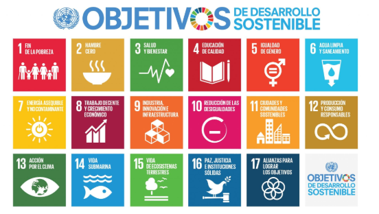
Sostenibilidad en tech
- Inversores y fondos de venture priorizan criterios ESG (Environmental, Social & Governance).
- Consumidores y talentos jóvenes valoran las empresas responsables.
- Riesgos legales y regulatorios crecientes.
Marcos regulatorios
- Acuerdo de París
- Agenda 2030 (ONU)
- Ley 25.675 (General del Ambiente): principios de prevención y responsabilidad ambiental.
- Ley 27.592 («Ley Yolanda»): capacitación ambiental obligatoria para funcionarios públicos.
- Beneficios fiscales y programas de apoyo (energías renovables, financiamiento FONTAR).
- Riesgos de compliance ambiental, sobre todo por publicidad engañosa o greenwashing.
Modelo de plan de sustentabilidad
- Diagnóstico inicial: análisis de impactos (huella de carbono, cadena de suministro, ética de datos) y mapeo de stakeholders.
- Definición de objetivos alineados a los ODS.
- Estrategias y acciones concretas.
- Seguimiento de KPIs.
- Comunicación y reporting.
En el final: definí sostenibilidad y sus tres dimensiones, relacioná ESG con el financiamiento de startups, y sabé nombrar marcos (Acuerdo de París, Agenda 2030, Ley 25.675, Ley Yolanda) y el riesgo de greenwashing.
Economía
Macroeconomía
Estudia el funcionamiento global de la economía. Indicadores clave:
- PBI: valor total de todos los ByS producidos en una economía en un período (generalmente un año).
- Desempleo: personas en condiciones y con deseo de trabajar que no consiguen empleo. Tipos: cíclico (recesiones), estructural (cambios tecnológicos, desajuste oferta/demanda laboral) y friccional (transitorio).
- Tipo de cambio: relación de proporción entre los valores de dos monedas; surge del comercio internacional entre países con distintas monedas.
- Inflación: aumento sostenido y generalizado de los precios; se mide con el IPC. Tipos: de demanda, de costos, inercial/por expectativas, estructural y por política monetaria.
Tasas: nominal vs real (Fisher)
La tasa efectiva es nominal respecto de la inflación; para saber el rendimiento verdadero se calcula la tasa real.
- La pregunta correcta: ¿el salario creció más, igual o menos que los precios?
- Salario real final = 750.000 / (1 + TI) = 750.000 / 2 = $375.000.
- Esos $750.000 compran lo mismo que $375.000 del año anterior → el poder adquisitivo cayó un 25%. Nominalmente ganó más, pero los precios subieron más que el salario.
¿Por qué la inflación genera conflictos? Redistribuye ingresos entre trabajadores (piden aumentos para no perder), empresas (sus costos pueden subir más rápido que sus ingresos) y Estado (recauda más nominal pero debe actualizar jubilaciones → tensión fiscal). Conflicto típico: «paritarias vs. precios vs. márgenes».
Impacto en consumo e inversión: el consumo cae (menor poder adquisitivo; se adelantan compras de durables si se espera más inflación); la inversión baja porque la incertidumbre dificulta calcular costos y rentabilidad, reduce el crédito real y empuja a dolarizar excedentes.
Microeconomía
Estudia el comportamiento de los agentes individuales.
- Mercado: espacio (físico o virtual) donde se encuentran oferentes y demandantes para intercambiar ByS o factores de producción. Pueden ser locales/globales, organizados/no organizados, formales/informales. El precio actúa como señal que coordina producción y consumo.
- Oferta: cantidad de un ByS que los productores están dispuestos a vender a diferentes precios.
- Demanda: cantidad de un ByS que los consumidores están dispuestos a adquirir a diferentes precios.
Estructuras de mercado
| Competencia perfecta | Monopolio | Oligopolio | Competencia monopólica | |
|---|---|---|---|---|
| Cantidad de empresas | Muchas | Una | Pocas | Muchas |
| Información | Perfecta | Perfecta | Imperfecta | Imperfecta |
| Homogeneidad del bien | Homogéneos | Un solo bien o servicio | Homogéneos o diferenciados | Diferenciados |
| Barreras de entrada/salida | No hay | Monopolio natural: control de un factor, patentes, tecnología única | Inversiones, ventaja en costos | Bajas |
| Influencia en los precios | No hay | Muchísima | Mucha | Poca |
Monopolio, oligopolio y competencia monopólica son formas de competencia imperfecta.
Punto de equilibrio
En el final: definí los indicadores macro (PBI, desempleo y sus tipos, inflación y sus tipos), aplicá Fisher para tasa/salario real, y explicá cómo la inflación redistribuye ingresos y afecta consumo e inversión.
Evaluación de negocio
Cruz de Porter (5 fuerzas)
Objetivo: evaluar la estructura competitiva de una industria y comprender los factores que afectan su rentabilidad potencial.
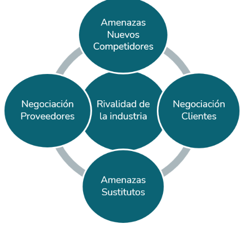
- Rivalidad entre competidores: intensidad de la competencia. A mayor rivalidad, precios más bajos y menor margen.
- Amenaza de nuevos competidores: facilidad de entrada. A menores barreras, mayor amenaza.
- Poder de los proveedores: capacidad de influir en precios y condiciones. Menos proveedores → más poder.
- Poder de los clientes: influencia de los compradores sobre precios y condiciones de venta.
- Amenaza de sustitutos: riesgo de que el cliente opte por alternativas que satisfacen la misma necesidad.
Business Model Canvas
Herramienta para visualizar el modelo de negocio en 9 bloques (visualización clara, análisis integral, planificación estratégica).
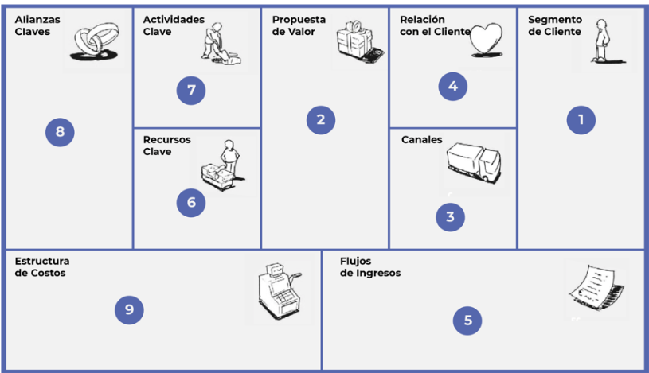
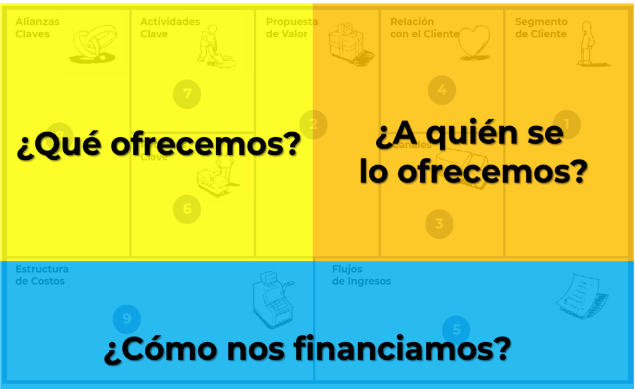
- Segmento de cliente (mercado): ¿para quién creamos valor? B2B / B2C / B2B2C. Fracciones de mercado:
- TAM (Total Addressable Market): todo el mercado si captás el 100%. Dimensiona la oportunidad.
- SAM (Serviceable Available Market): la parte del TAM a la que podés llegar con tu producto. Fija metas de crecimiento.
- SOM (Serviceable Obtainable Market): captura realista a corto/mediano plazo.
- Propuesta de valor: ¿qué valor entregamos, qué problema resolvemos? Debe ser clara, específica y real. Se diseña observando beneficios esperados, dolores y tareas del cliente, y creando ByS que generen esos beneficios y alivien esos dolores.
- Canales: cómo llegamos al cliente. Directo/indirecto, propio/socio.
- Relaciones con clientes: asistencia personal (exclusiva), autoservicio, servicios automáticos, comunidades, creación colectiva.
- Fuentes de ingresos: venta de activos, cuotas por uso, suscripción, préstamo/alquiler, licencias, comisiones, publicidad.
- Recursos clave: físicos, intelectuales (patentes, marcas), humanos, financieros.
- Actividades clave: acciones necesarias para que el modelo funcione.
- Alianzas clave: empresas no competidoras (complementarios), coopetición, joint ventures, clientes.
- Estructura de costos: según costes (recortar gastos) o según valor (foco en crear valor). Costos fijos/variables, de adquisición de clientes, de desarrollo, operativos.
Segmento de cliente: fracciones de mercado
- TAM (Total Addressable Market): todo el mercado si captás el 100%. Dimensiona la oportunidad.
- SAM (Serviceable Available Market): la parte del TAM a la que podés llegar con tu producto. Fija metas de crecimiento.
- SOM (Serviceable Obtainable Market): la captura realista a corto/mediano plazo.
- TAM: todas las PYMEs activas en América Latina (~25 millones) × ticket promedio de formación en IA (USD 200) → ≈ USD 5.000 millones.
- SAM: PYMEs de Argentina, Chile y Uruguay (~3 millones) × USD 200 → ≈ USD 600 millones.
- SOM: PYMEs con liderazgo activo en digitalización (~5%) × USD 200 → ≈ USD 30 millones.
¿Para quién creamos valor? (cliente vs usuario)
| Público objetivo | Cliente ideal |
|---|---|
| Idea más abstracta | Humanizamos y entendemos |
| Sólo datos demográficos | Datos concretos |
| Varios tipos de clientes ideales | Define necesidades |
| Grupo sin identidad propia | Con identidad propia |
Propuesta de valor: observar y diseñar
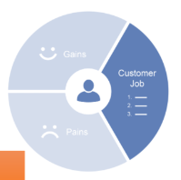
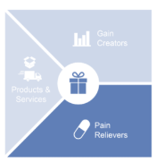
Relaciones con los clientes
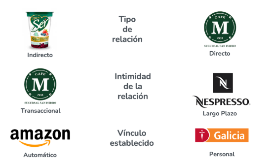
Estructura de costos (composición del precio de venta)
Pasá el cursor sobre cada capa para ver qué incluye. El precio se construye apilando costos, de las materias primas hasta el margen.
Estrategia del Océano Azul
| Océano rojo | Océano azul |
|---|---|
| Competencia feroz | No hay competencia al inicio |
| Guerra de precios | Creación de nuevo valor |
| Reglas existentes | Reglas nuevas |
| Demanda conocida | Demanda creada |
| Valor y costo en tensión | Valor alto con costo bajo (innovación en valor) |
Principios: reconstruir las fronteras del mercado; enfocarse en el panorama global (no en los números); ir más allá de la demanda existente; diseñar la estrategia pensando en la ejecución; superar obstáculos organizacionales; construir implementación y adopción en simultáneo.
Plan de negocio
Resumen ejecutivo y hoja de ruta que le da a inversores una idea clara de por qué apoyar el negocio. Es el desarrollo detallado del Modelo de Negocio. Objetivos: guiar la acción, reducir incertidumbre, comunicar el proyecto y medir desempeño.
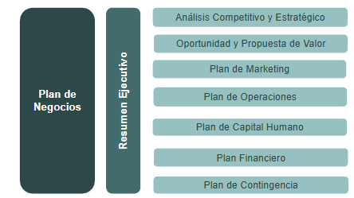
- Resumen ejecutivo: misión, visión, propuesta de valor general, objetivos de largo plazo.
- Análisis competitivo y estratégico: FODA + mapa competitivo.
- Propuesta de valor: TAM/SAM/SOM, cliente ideal, modelo Canvas.
- Plan de marketing y ventas: 4P (Producto, Precio, Plaza, Promoción) y 4C (Cliente, Costo, Conveniencia, Comunicación).
- Plan de operaciones: detalles operativos de la propuesta.
- Plan de capital humano: organigrama, roles, competencias, incorporación/retención, capacitación, cultura, presupuesto de personal.
- Plan económico-financiero: proyecciones, viabilidad económica, sostenibilidad financiera.
- Plan de contingencia: el «plan B» ante escenarios imprevistos.
Costeo
Incluye todos los costos de producción. Los costos fijos se reparten entre las unidades producidas y forman parte del inventario hasta que se venden.
Incluye solo los costos variables de producción en el costo unitario.
El modelo de costeo impacta en cómo se calcula el margen de ganancia (resultado bruto).
Punto de equilibrio
Con CF = costos fijos, PV = precio de venta, CV = costos variables.
- Margen de seguridad = (Ventas actuales − Ventas de equilibrio) / Ventas actuales. Cuánto % puedo perder sin entrar en pérdidas.
- Capacidad en punto de equilibrio = Ventas de equilibrio / Ventas actuales.
Decisiones financieras y evaluación de proyectos
Decisiones de operación (flujo de caja diario), de inversión (maximizar valor a largo plazo), de financiamiento (elegir fuentes) y de política de dividendos (cómo repartir ganancias).
- VAN: determina si un proyecto es viable económicamente (si es positivo, crea valor).
- Cashflow: mide los movimientos en efectivo para evitar el quiebre de caja; solo considera los movimientos propios del proyecto.
- Período de repago = Inversión inicial / Cashflow anual. Tiempo para recuperar el costo inicial.
En el final: es el capítulo más «de diseño». Sabé aplicar las 5 fuerzas a una industria, armar un Canvas con TAM/SAM/SOM, distinguir Océano Azul de competir en rojo, y calcular punto de equilibrio, margen de seguridad y VAN. Modelo de negocio (qué/cómo) vs plan de negocio (detalle) → §2.
Planificación y administración
- Planificación: parte de la visión, la misión, los objetivos y las estrategias/políticas. Plazos: corto (< 1 año), mediano (1–5 años), largo (> 5 años).
- Organización: diseñar el organigrama, definir responsabilidades, coordinar y sincronizar tareas.
- Dirección: ejercer influencia positiva y voluntaria para que lo planeado se realice. «Hacer que las cosas se hagan.»
- Control: medir el desempeño de lo ejecutado, compararlo con las metas, destacar desvíos y corregir.
Niveles de control: estratégico (políticas y estrategias, altos mandos), táctico (coordinación de actividades, gerentes) y operativo (ejecución eficaz de las tareas, analistas/obreros).
Estratégico: políticas y estrategias de la organización. Altos mandos.
Táctico: coordinación de actividades. Gerentes / administradores.
Operativo: ejecución eficaz de las tareas. Analistas / obreros.
Herramientas
FODA
Análisis estratégico que identifica Fortalezas, Oportunidades, Debilidades y Amenazas. Permite evaluar la posición actual y ayudar en la planificación (fortalezas/debilidades son internas; oportunidades/amenazas, externas).
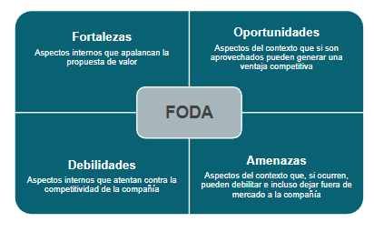
Presupuesto
Herramienta de planificación, coordinación y control que traduce planes y estrategias en números concretos. Puede ser de largo/mediano/corto plazo y flexible o rígido.
- de Ventas (ventas proyectadas)
- de Operaciones (capacidad de producir esas ventas)
- de Gastos administrativos
- de Inversiones (ByS a adquirir)
- de Ingresos / Egresos
- Flujo neto
- Caja inicial / final / mínima
- Necesidades de financiamiento e inversión/ahorro
Premisas: supuestos que se asumen antes de presupuestar (nivel de producción estándar, costo de horas de servicio, inflación estimada, fluctuación del PBI, tipo de cambio y tasa proyectada).
Estado de resultados
Estado contable que refleja las ganancias y pérdidas de un ente en un período. Se arma en cascada:
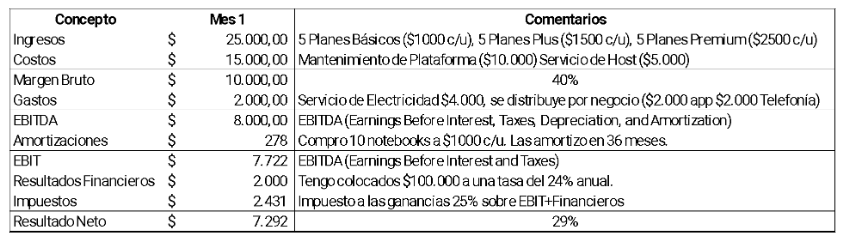
- Costos (OPEX): costo × cantidad vendida → Resultado Bruto.
- Gastos (OPEX): costos fijos no asociados directamente a la producción (distribuidos por algún factor) → EBITDA.
- Amortizaciones (CAPEX): valor de los activos fijos / vida útil → EBIT.
- Resultados financieros: diferencias de cambio, intereses, inflación, tenencia, compra-venta de activos financieros.
- Impuestos: IIGG sobre EBIT + resultados financieros → Resultado Neto.
Control presupuestario y ajustes
- Control presupuestario: comparación sistemática entre lo presupuestado y lo realizado; función esencial de retroalimentación.
- Análisis de variaciones: analizar las desviaciones en ingresos, gastos, cronograma, calidad y alcance.
- Reforecast: ajustar las proyecciones ante un cambio de paradigma para reflejar la realidad actual (actualizar estimaciones, reasignar recursos, mejorar la toma de decisiones).
En el final: las 4 funciones de la administración y los 3 niveles de control; para qué sirve el FODA; presupuesto económico vs financiero; y armar el estado de resultados en cascada sabiendo qué entra en cada escalón (OPEX vs CAPEX, EBITDA vs EBIT vs Neto).
Start-ups e innovación
Características: origen en universidades/I+D; alta inversión en conocimiento y baja en infraestructura al inicio; riesgo alto pero potencial de crecimiento rápido; necesidad de vincularse con actores del ecosistema.
Start-up vs PYME
| Start-up | PYME | |
|---|---|---|
| Objetivo principal | Modelo repetible y escalable | Modelo conocido |
| Contexto | Alta incertidumbre | Mercado establecido |
| Formas de trabajo | Ciclos rápidos de experimentación | Procesos estables |
| Financiamiento | Bootstrapping / Venture Capital | Capital propio / créditos tradicionales |
| Escalabilidad | Crecimiento exponencial por diseño | Crecimiento lineal |
Etapas de crecimiento

Del descubrimiento a la escala
| Pre-seed | Seed | Serie A (Early) | Serie B (Early) | Growth (C, D, E…) | |
|---|---|---|---|---|---|
| Volumen de ronda (€) | menos de 200K | 200K – 500K | 1M – 5M | 6M – 20M | más de 20M |
| Tipo de inversor | FFF, business angels, aceleradoras, financiación pública | Business angels, family offices, aceleradoras, financiación pública, crowdfunding, venture capital | Venture capital | Venture capital | Grandes fondos |
| Propósito financiero | Desarrollar MVP; crear modelo de negocio | Mejorar MVP; validar modelo; cubrir roles clave del equipo; métricas (clientes, ventas, ingresos) | Escalar métricas; mostrar rentabilidad atractiva; ampliar equipo | Aumentar margen de ganancias; generar flujo de caja positivo | Consolidar una estrategia de crecimiento sólida y rápida |
Technology Readiness Levels (TRLs)
Escala de madurez tecnológica, del laboratorio (academia) a la operación real (industria / gobierno).
Principios básicos observados. (Research)
Concepto tecnológico formulado. (Research)
Prueba de concepto experimental. (Research)
Tecnología validada en laboratorio / entorno local. (Development)
Tecnología validada en entorno relevante. (Development)
Tecnología demostrada en entorno relevante. (Development)
Prototipo de sistema demostrado en entorno operativo. (Deployment)
Sistema completo y calificado. (Deployment)
Sistema real probado en entorno operativo. (Deployment)
Formas de financiamiento
- Recursos propios / ingresos de clientes.
- Autofinanciamiento.
- Control total de la organización.
- Mayor disciplina financiera.
- Capital semilla: rondas pre-Series A, en general menores a 1M.
- Capital emprendedor: Series A en adelante, mayores a 1M.
- Capital privado: compañías maduras, participación habitualmente mayoritaria.
Innovación
Proceso por el que una idea se transforma en un ByS novedoso en el mercado; los resultados de la I+D se lanzan al mercado como nuevos ByS.
Innovación abierta
Las ideas valiosas pueden venir de dentro o de fuera de la compañía, y salir al mercado desde dentro o fuera. Da acceso a conocimiento y tecnologías externas, reduce costos y riesgos, facilita escalar y co-crear productos.
Según cuánto forma parte de la estrategia, la madurez de la innovación escala así:
Gestión de la innovación: la innovación forma parte de mi estrategia.
Innovación continua: no queda otro remedio, el mercado nos puede.
Innovación puntual: sólo ante la demanda de clientes.
Innovación oculta: el día a día nos puede.
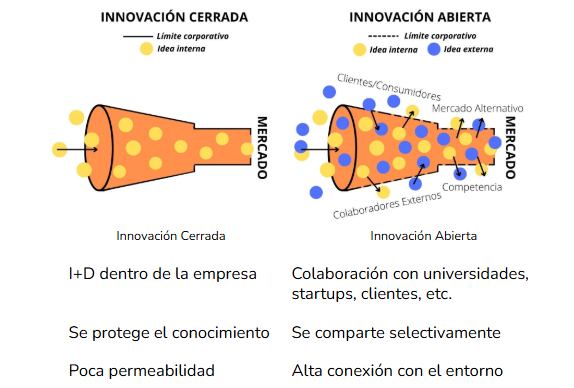

Método PUSH vs PULL
Push = la tecnología/investigación empuja hacia el mercado; pull = la demanda del mercado tracciona el desarrollo.
Ecosistema de innovación
- Estado: políticas, regulación. Estado → Empresa: incentivos, beneficios fiscales.
- Sistema científico-tecnológico (SCT): conocimiento, tecnología. Empresa → SCT: transferencia tecnológica, innovación abierta, spin-offs.
- Empresa: transformación en valor. SCT → Estado: financiamiento, becas, políticas.
Lean Startup
Permite aprender rápido, reducir el riesgo (validar antes de invertir) y optimizar recursos (construir solo lo que importa). Se basa en dos pilares:
Lean Manufacturing
Eliminación de desperdicio, desarrollo iterativo, MVP, pivote o perseverancia.
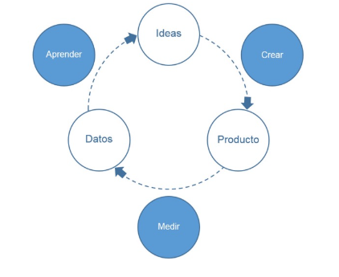
Customer Development
Validación temprana, ajuste producto-mercado, iteración constante.
MVP (Producto Mínimo Viable)
Versión inicial de un ByS con las funciones básicas para validar una idea en el mercado real: probar, medir y aprender antes del lanzamiento final. Sirve para obtener feedback temprano, validar hipótesis y reducir riesgos.
- Ejemplos de MVP: video de demostración; MVP conserje (servicio manual y personalizado); Mago de Oz (el cliente cree que es el producto final, pero es a mano); smoke test (ofrecer la venta de un producto aún no creado).
- Pasos: 1) analizar al público objetivo; 2) testear en dos fases — Alpha (usuarios clave) y Beta (con ajustes); 3) actuar según resultados con métricas accionables: pivotar si no cumple o perseverar si funciona.
Herramientas
Running Lean
Proceso iterativo para pasar del plan A a un plan que funcione (Lean Canvas + experimentación).
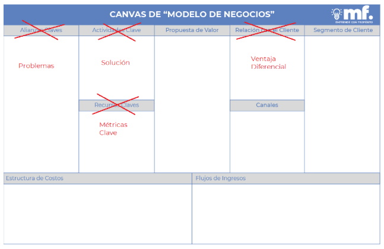

| Característica | Lean Canvas | Business Model Canvas |
|---|---|---|
| Enfoque principal | Diseñado específicamente para startups; aborda la incertidumbre y busca el ajuste producto-mercado rápido. | Da una visión global del modelo de negocio, aplicable a empresas de cualquier tamaño y etapa. |
| Origen | Adaptado por Ash Maurya a partir del BMC, para el enfoque Lean Startup. | Desarrollado por Alexander Osterwalder para mapear, discutir, diseñar e innovar modelos de negocio. |
| Componentes clave | Problema, Solución, Métricas clave, Ventaja única, Propuesta de valor, Segmentos, Canales, Estructura de costos, Fuentes de ingresos. | Segmentos, Propuestas de valor, Canales, Relaciones, Fuentes de ingresos, Recursos clave, Actividades clave, Socios clave, Estructura de costos. |
| Foco en problema/solución | Alto: valida el problema del cliente antes de definir la solución. | Presente, pero con un enfoque más equilibrado entre todos los componentes. |
| Iteración y flexibilidad | Alta: iteraciones rápidas basadas en feedback para llegar al product-market fit. | Moderada: ajustes según se aprende más sobre clientes y mercado. |
| Simplicidad | Simplificado, para entender y ajustar rápido. | Complejo, con visión detallada de cada aspecto (requiere más tiempo). |
| Objetivo de aprendizaje | Aprender rápido sobre la viabilidad, reduciendo el riesgo de fallo. | Entender y definir cómo la organización crea, entrega y captura valor. |
| Público objetivo | Emprendedores y startups en etapas iniciales que validan su idea. | Desde emprendedores hasta grandes corporaciones. |
Value Stick
Herramienta de captura de valor entre la disposición a pagar y los costos.
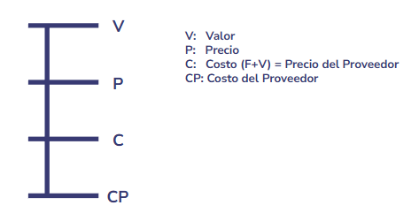
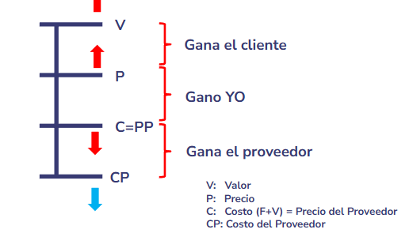
Job To Be Done
En vez de enfocarse en las características del producto, centrarse en la tarea que el cliente quiere realizar: funcional, emocional y social.
Demand Side Sales
Vender lo que el cliente demanda: identificar su problema, explorar alternativas, presentar soluciones adaptadas y ayudar a decidir.
Matriz ERIC
Diferenciate de tu competencia con una o más de estas acciones, a partir del desarrollo previo de la curva de valor (ligada al Océano Azul):
Eliminar ✕
Qué factores que el sector da por sentado conviene eliminar.
Reducir −
Qué factores reducir muy por debajo del estándar del sector.
Incrementar +
Qué factores incrementar muy por encima del estándar del sector.
Crear ★
Qué factores nuevos crear, que el sector nunca ofreció.
En el final: distinguí start-up de PYME (escalable vs conocido), las formas de financiamiento (bootstrapping vs VC y sus etapas), el ciclo Construir-Medir-Aprender, qué es un MVP con ejemplos, y pivotar vs perseverar. La Matriz ERIC conecta con el Océano Azul de §9.